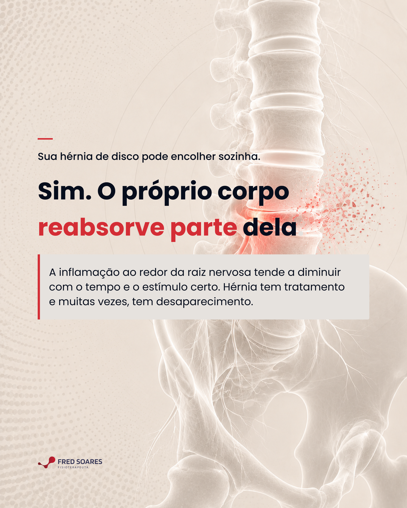
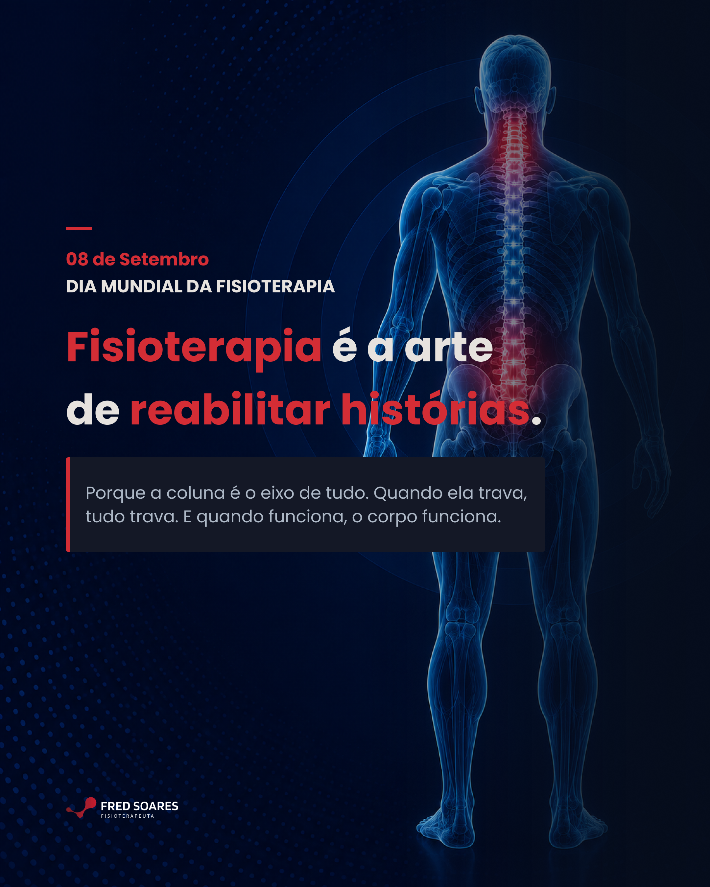
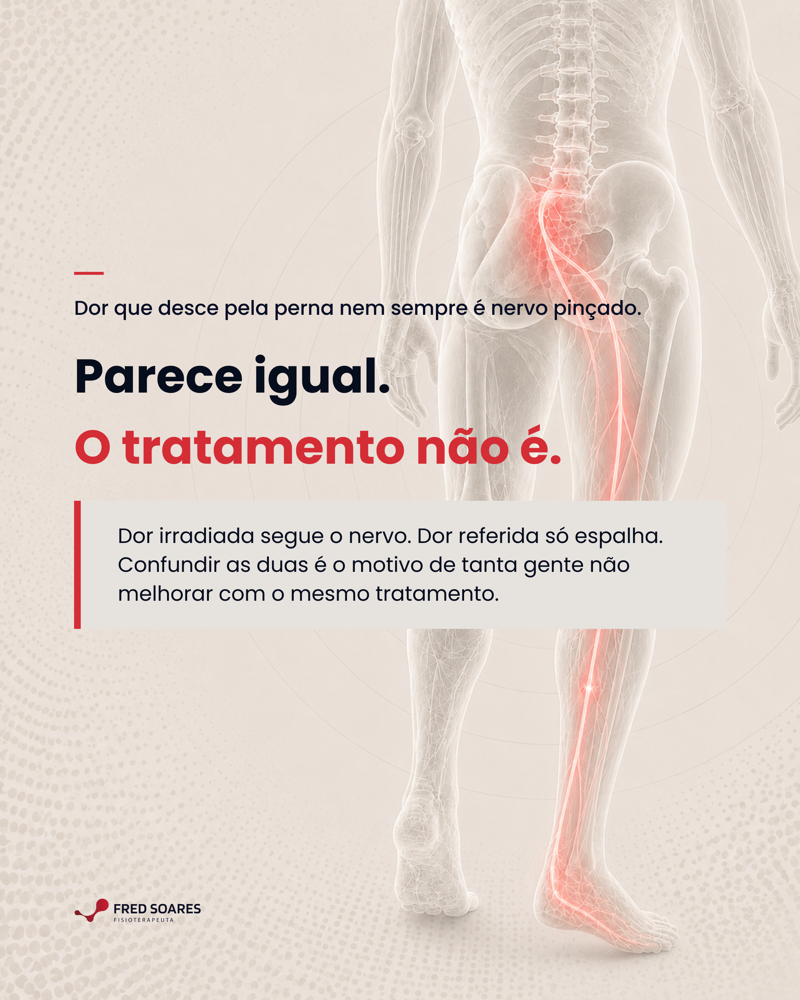
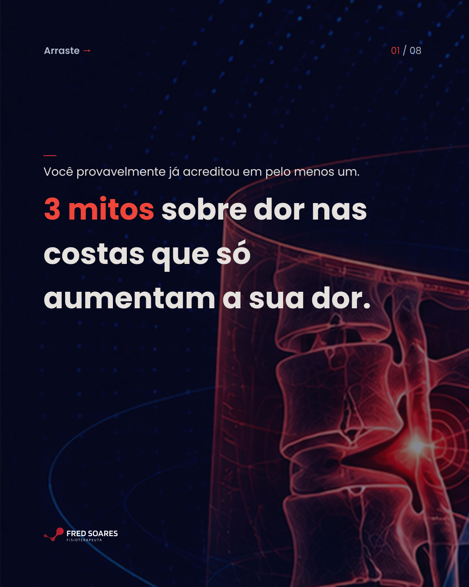
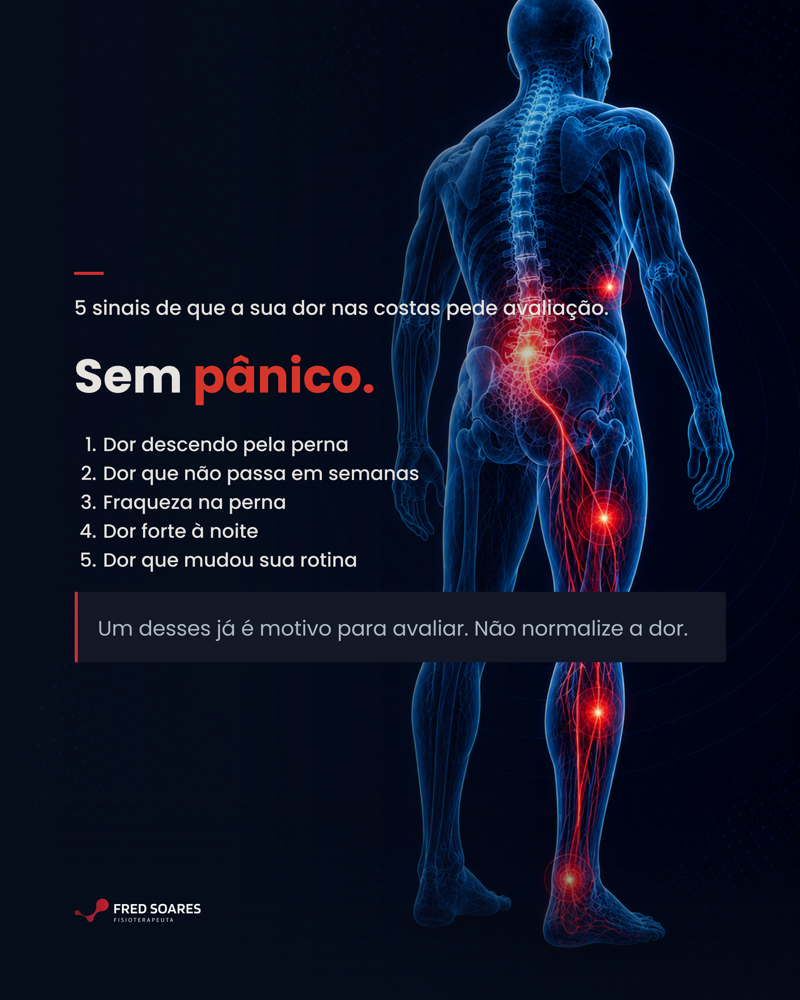
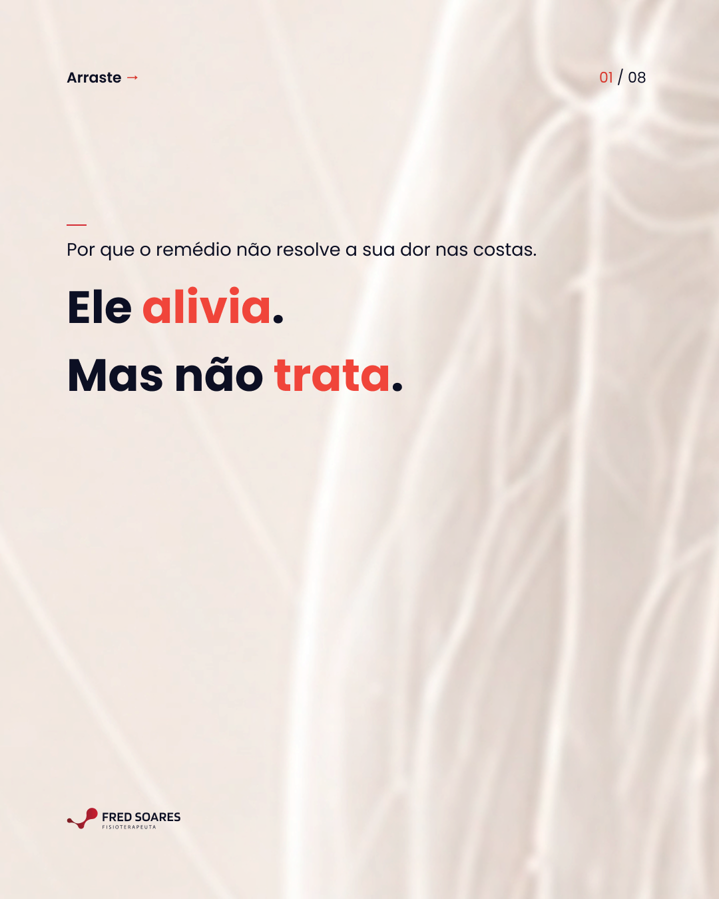

Calendário Editorial · Instagram · Setembro 2026
Mês 4
Dr. Fred
Soares
Osteopata · Especialista em coluna
Intermares, Cabedelo
Apresentação por Arrive In Digital

Osteopata · Especialista em coluna
Intermares, Cabedelo
Apresentação por Arrive In Digital




8 slides

8 slidesGrade 3×3 · 8 publicações em ordem de postagem. Clique em qualquer imagem para ampliar.
Diagnóstico diferencial e desconstrução de mitos. Posicionamento inalterado.
Promessa central
"destravar a coluna. tratar a causa. 4–5 sessões. resolvido."
Filtre por formato. Clique em "Ver brief" para ver frase, legenda e instruções de design.
| # | Slide | Copy |
|---|---|---|
| 1 | Capa | 3 mitos sobre coluna que a maioria acredita — e que atrapalham o tratamento. |
| 2 | Mito 1 | "Repouso cura a coluna." O repouso alivia a inflamação. A restrição que gerou o problema continua ativa. Quando você volta ao movimento — o ciclo recomeça. Tratar a dor e tratar a causa são coisas diferentes. Repouso é um intervalo. Não é tratamento. |
| 3 | Mito 2 | "Quem tem hérnia não pode se exercitar." A hérnia não proíbe movimento — indica que algo está sobrecarregando o disco. Identificar o que está sobrecarregando define o que pode ou não pode. Com progressão correta, o exercício faz parte da recuperação. A hérnia não é o limite. A avaliação define o caminho. |
| 4 | Mito 3 | "A dor nas costas vai passar sozinha." Pode passar. A restrição não. O corpo aprende a compensar o movimento limitado — até o dia em que a compensação chega no limite. Por isso a dor "volta do nada" depois de anos sem sentir. A ausência de dor não é ausência de restrição. |
| 5 | Desdobramento | Os três mitos têm algo em comum: tratam o sintoma como se fosse a causa. A dor não é o problema — é o sinal de que há um problema. Quando o sinal para, a causa continua. Por isso o ciclo se repete. |
| 6 | A virada | A diferença entre tratar o sintoma e tratar a causa: o sintoma volta. A causa, quando tratada, não. A avaliação identifica onde está a restrição, o que está sobrecarregando e por quê. Esse é o ponto de partida. |
| 7 | O paciente certo | Quem está pronto para tratar: cansou de ciclo de melhora e recaída. Quer entender o que está gerando o problema. Está disposto a 4–5 sessões com foco na causa, não no alívio temporário. |
| 8 | CTA | Dr. Fred Soares · Osteopata especialista em coluna · Instituto de Madrid + Mestrado USP · +20 anos · +10.000 pacientes · 📍 Intermares, Cabedelo · Salva esse post. E se você reconheceu algum desses mitos na sua história: agenda uma avaliação. |
| # | Slide | Copy |
|---|---|---|
| 1 | Capa | Remédio ou Fisioterapia? A pergunta que a maioria faz tarde demais. |
| 2 | O remédio | O remédio serve para isso: reduzir inflamação e aliviar dor. Ele faz isso bem. Mas não muda a restrição que causou a inflamação. O remédio trata o alarme. Não o que disparou. |
| 3 | A fisio | A fisioterapia serve para isso: identificar a origem e tratar a causa. A restrição. O padrão de movimento. O que está sobrecarregando o tecido. A fisio vai na fonte. Não no sinal. |
| 4 | A relação | Eles não são concorrentes. São fases diferentes. O remédio cria uma janela de alívio. A fisioterapia usa essa janela para tratar. Quando usados juntos, na ordem certa, o resultado é mais rápido e mais duradouro. |
| 5 | O problema | O problema é quando o remédio vira o tratamento. A dor passa. O corpo volta ao mesmo padrão. A restrição continua. A dor volta. O ciclo continua indefinidamente — porque a causa não foi tocada. |
| 6 | O ciclo | O ciclo do remédio sem fisio: Toma remédio → alivia → volta ao normal → dor retorna → toma remédio. Semanas, meses, anos. O padrão que gera a dor permanece intacto. Só o alarme é silenciado. |
| 7 | A saída | Quando a fisioterapia identifica a causa, o ciclo para. Não porque a dor desapareceu — mas porque o que a gerou foi tratado. Em média 4–5 sessões. A restrição identificada. O padrão corrigido. Resolvido. |
| 8 | CTA | Dr. Fred Soares · Osteopata especialista em coluna · Instituto de Madrid + Mestrado USP · +20 anos · +10.000 pacientes · 📍 Intermares, Cabedelo · Salva esse post. Quer tratar a causa, não o ciclo? Agenda uma avaliação. |
Dr. Fred Soares · Calendário Editorial Mês 4 · Setembro 2026 · Arrive In Digital